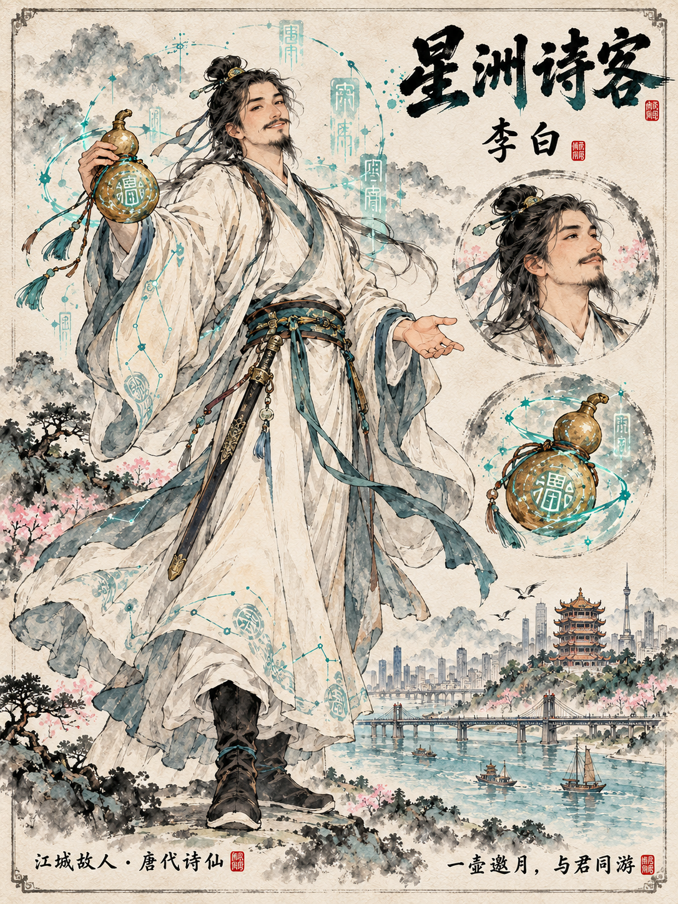
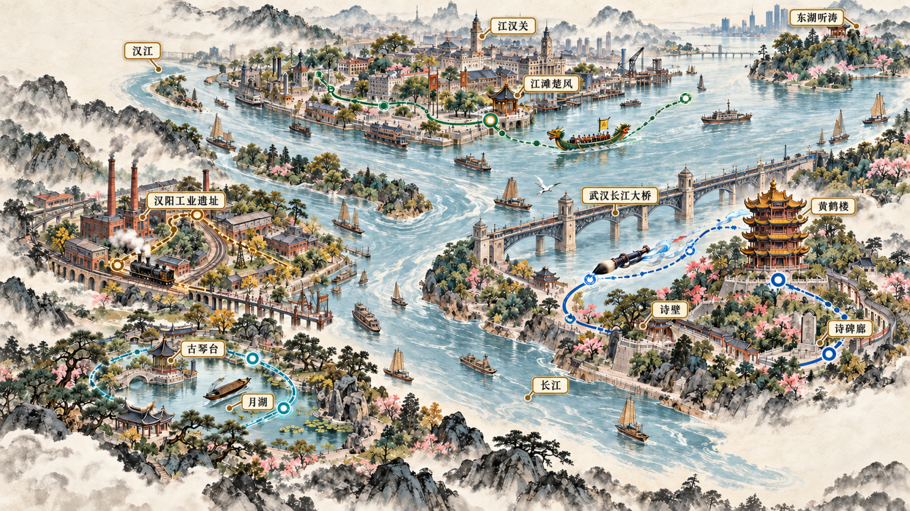
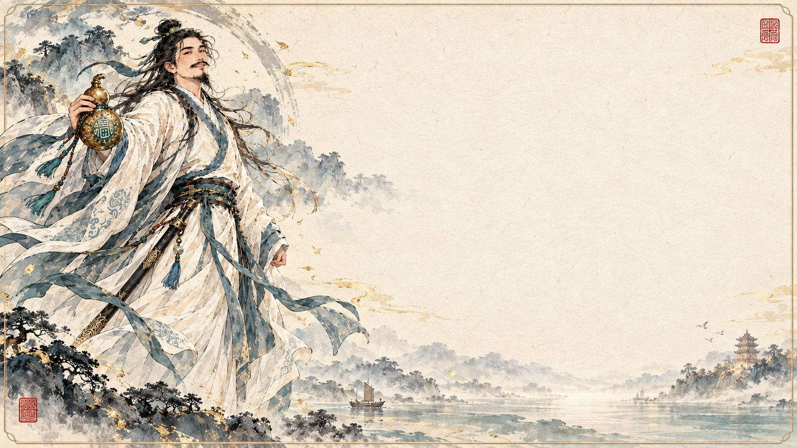

诗仙 · 御笔
历史人物赛博地陪
选一位故人，用他的眼光认识武汉。
第一章 · 择一故人
李白路线已开放，其余三位故人将在后续篇章中抵达。

江滩楚风 · 待开放
古琴台月湖 · 待开放
汉阳工业 · 待开放
第二章 · 乘风御笔
“旅伴，抓紧了。后世巧匠把长虹卧在江上，正好借来做今日的路！”

御笔落处
本地图为数字游览舞台，不作为现实导航。
第三章 · 全景寻幽
第四章 · 触景共题
选择一至三个意象，也可以写下自己的词。新诗是本次数字旅程的原创演绎，不署作历史李白真迹。
还未选择意象

江城故人 · 李白篇
JC-LB-DEMO计算中…演示回执 · 未登记 BOT Chain
第五章 · 带走此刻
卡片只记录你确认采用的意象与诗句。当前版本生成本地摘要与图片，不会假称已经上链。